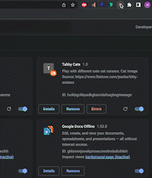
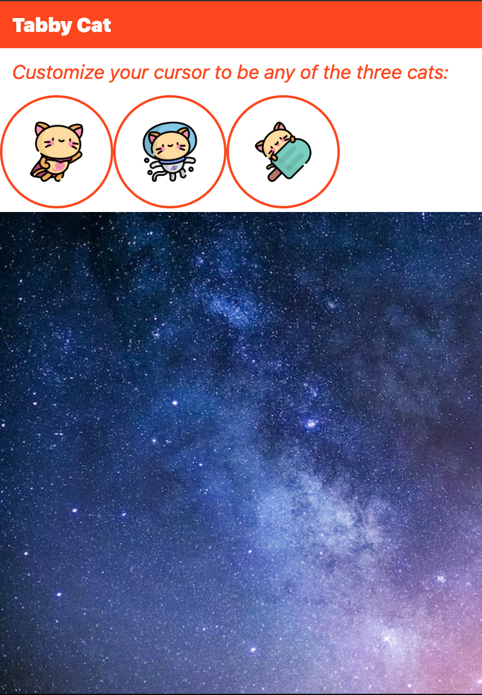
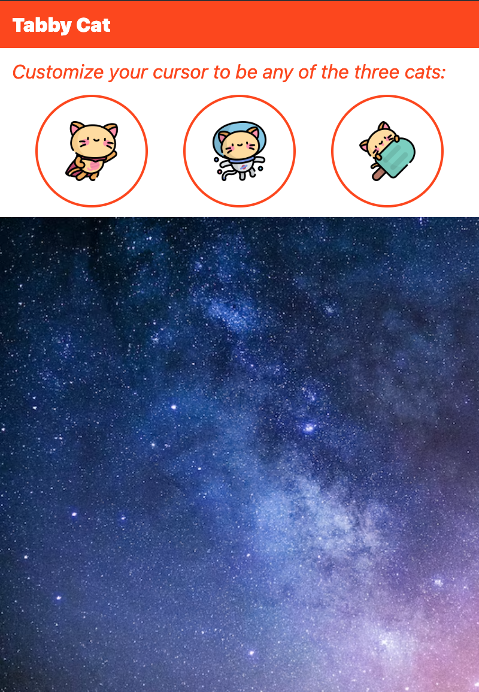

MP1 Writeup
Overview & Usage
For MP1, I created a chrome browser extension: "Tabby Cats". This extension lets users choose and play with different cat cursors in a popup. The code for this extension can be found in this public github repository: https://github.com/hjchoi28/tabby-cats. You can try out this browser by cloning the repository then selecting the "load unpacked" button in chrome://extensions/. Make sure you toggle on developer mode for the button to show up.

Development Process
First, I looked at the extension examples provided and familiarized myself with some of the common elements and commands. Then, I sketched an idea of what the html and css would look like. I also thought about what javascript methods I could use to achieve my goals. I had lots of fun looking for the cursor images on flaticon. I originally planned to have different animals like dogs, cats, and birds, but I fell in love with the cute kitten icons that I ultimately used for this extension.
After the planning, I worked on the html and css of the popup. I like to complete the majority of the html and css file first, before working on anything else. The following is the popup without the javascript which would change the cursor image:
As I was coding, I also made sure to give unique ids to the different cursor cat options to make it easier for myself later on. I focused on writing the content in the html file and making sure the path to the images were correct. Then, I played with CSS image resizing, margins, font, background color, etc...
Before justifying content with flex:

After fixing the flex box display:

Finally, I wrote the javascript file to listen for the click event and change the cursor image in the popup. I initially struggled with making the event listener call the function at the correct time. However, Raina helped me figure it out (more details in the Issue Deep Dive below).
Issue Deep-Dive
The issues I encountered were with the cursor image and event listener. For the cursor, the image would not load properly. First, I wanted to know if the image was the problem or if the line of code had an issue. To do so, I set the fallback cursor keyword to "help". So when the cursor changed to the "help", I knew that it was because the specified image failed to load. Then, I made sure to properly declare the path to the image (cursors/cursor-name.png). After further reseach, I realized the issue was with the size of the image. It is recommended to use icons that are at most 32x32 px. Once I changed the size, the image was able to load properly.
The second issue was with the event listener in my javascript file. I specified the element by id and added an event listener so that the cursor will change when the different buttons are clicked. I only changed the cursor for the cursor-playroom container in the popup. However, there was a bug where all of the functions were called before I even clicked on any of the options. To debug, I added alerts and tried to change the order. I made sure that the images were loading properly. I confirmed the "click" option worked by making a function that creates alerts when the popup body element is clicked. I also confirmed the element specified for the event listener was correct by altering the function to change the background color of that element. I asked for help from Raina and after trying different methods, like changing the html tag from class="options" to button, she noticed the error. When I called the function in the addEventListener, I included parenthesis, which cause it run the functions the momen the popup was opened. We fixed it by removing the extra parenthesis: .addEventListener("click", function) instead of .addEventListener("click", function()).
Ideas and Future Work
- Add more options for the cursor cat
- Add more options for the playroom background
- Consider making the playroom a separate new tab
- consider changing the cursor for the entire content script, not just the popup
Kudos
- Cursor image source: https://www.flaticon.com/packs/kitty-avatars
- Flex box: https://css-tricks.com/almanac/properties/j/justify-content/
- Image sizing: https://www.w3schools.com/css/css3_object-fit.asp
- Cursor CSS: https://developer.mozilla.org/en-US/docs/Web/CSS/cursor
- Last but not least... Raina! Thank you for helping me debug the event listener!